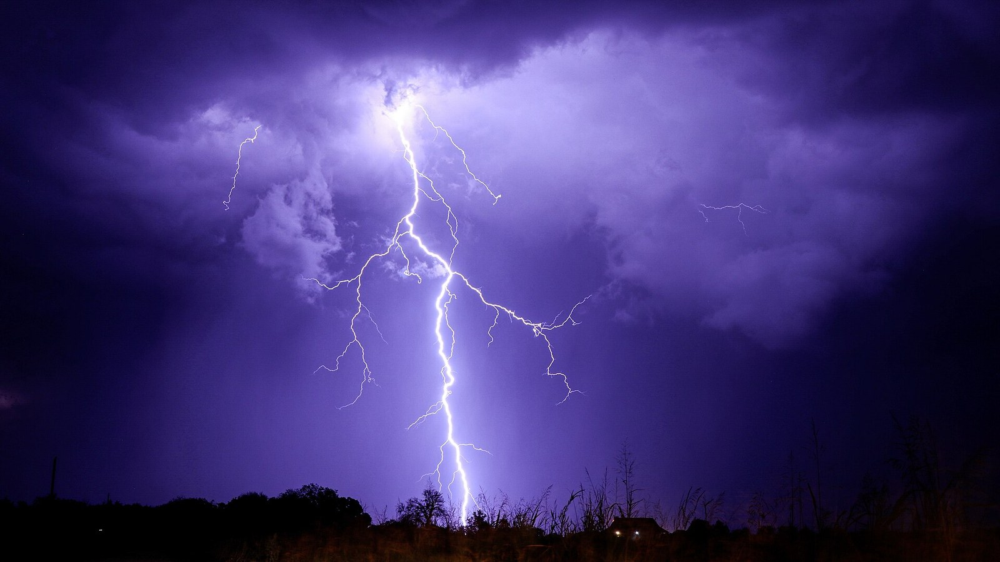
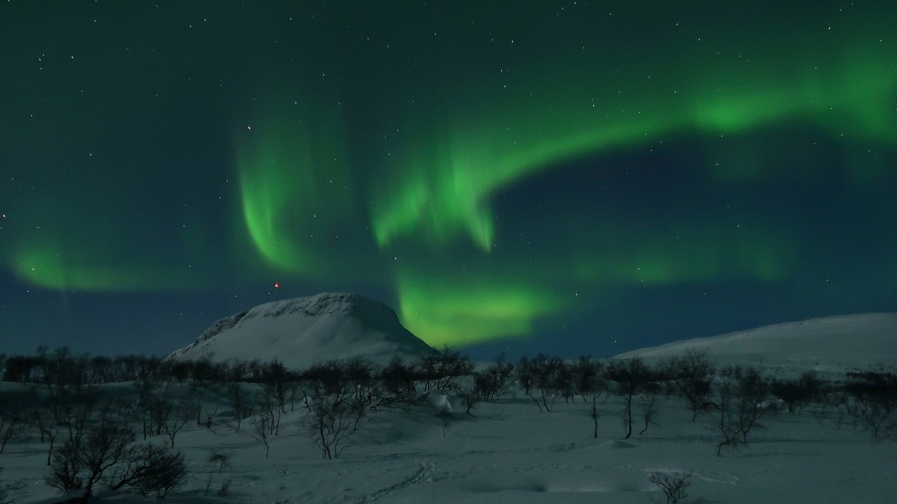

Plasma: the fourth state of matter
Why do the northern lights, a flash of lightning, the Sun and the fuel of a fusion reactor all count as the same state of matter?
Prior knowledge
- Fusion needs nuclei fast enough to overcome the Coulomb repulsion, helped by tunnellingchapter Fusion reactions: from the Sun to deuterium and tritium
- Temperature measures the kinetic energy of particles, and a gas obeys $p = nkT$, the particle form of $pV = nRT$ (earlier physics courses)
Core path: follow the steps in order. Besides calculations, the core path includes investigations, explanations and graphs. Tasks marked Optional give extra practice. Optional tasks: 1.
Think about it
On a clear winter night in Kilpisjärvi, green curtains of light move silently across the sky, sometimes with a red top edge. In a summer storm, a lightning flash lights up the whole sky for a moment. In the south of France, engineers are building ITER, a machine whose fuel will be about ten times hotter than the centre of the Sun, its hot core only about two metres from steel walls. Physicists say that all three contain the same unusual kind of matter.
What kind of matter is this, and how can something so hot be kept inside a machine?
Review: why fusion needs heat
Predict
Make your predictions before investigating 2 questions
Prediction 1: the northern lights
Prediction 2: hotter, but how much pressure?
Investigate
Investigation 1: plasma or not?
A plasma contains so many free electrons and ions that electric and magnetic forces control how it behaves. Read each description and decide.
Investigation 2: temperatures and densities
Statistical data · Published values: Sun and Solar core (Wikipedia), Lightning (Wikipedia), ITER facts and figures (iter.org) and the ITER reference scenario (CIEMAT fusion wiki), all checked 2026-11-01. The Sun's particle density is calculated from its published pressure and temperature with $n = p : (kT)$; the density of air from $p = nkT$ at $20\ ^\circ\text{C}$.
| Matter | Temperature (K) | Particles per $\text{m}^3$ |
|---|---|---|
| air in a classroom | $293$ | $2.5 \cdot 10^{25}$ molecules |
| lightning channel | about $3 \cdot 10^{4}$ | — |
| Sun's corona | $1\text{–}2 \cdot 10^{6}$ | — |
| Sun's core | $1.57 \cdot 10^{7}$ | $1.2 \cdot 10^{32}$ |
| ITER plasma core (planned) | $1.5 \cdot 10^{8}$ | $1.0 \cdot 10^{20}$ ions |
In a plasma, there are also free electrons: in ITER's hydrogen plasma, one for every ion.
Compare the last row with the first.
How many times more particles are there in one cubic metre of classroom air than there are ions in one cubic metre of ITER's plasma?
Hint 1: a guiding question
Divide the larger number density by the smaller one.
Hint 2: what is the connection
$(2.5 \cdot 10^{25}) : (1.0 \cdot 10^{20})$: divide the numbers and subtract the exponents.
Show the solution
Given
air $n_\text{air} = 2.5 \cdot 10^{25}\ \text{m}^{-3}$, ITER's plasma $n_\text{i} = 1.0 \cdot 10^{20}\ \text{m}^{-3}$ (ions)
Asked
the ratio $n_\text{air} : n_\text{i}$
Principle
"How many times more" is a ratio: divide the larger density by the smaller one.
Formula
$$\frac{n_\text{air}}{n_\text{i}}$$
Unit conversions
None: both are in particles per cubic metre, so the units cancel.
Substitution
$$\frac{n_\text{air}}{n_\text{i}} = \frac{2.5 \cdot 10^{25}\ \text{m}^{-3}}{1.0 \cdot 10^{20}\ \text{m}^{-3}} = 2.5 \cdot 10^{5}$$
Answer
Air has about $2.5 \cdot 10^{5} = 250\ 000$ times more particles in each cubic metre than ITER's plasma has ions; two significant figures, as in the data.
Reasonableness
A fusion plasma is often called "a very good vacuum": ITER's vessel is pumped almost empty before the fuel is let in. Even counting the electrons too, the plasma has over $100\ 000$ times fewer particles than air.
Word bank
plasma · ion · free electron · ionised · temperature · density (particles per cubic metre) · pressure · much hotter / much thinner than · whereas · both … and …
Sentence starters
- Both the Sun's core and … are …
- The Sun's core is about … times hotter / denser than …
- Whereas the Sun's core …, ITER's plasma …
- The evidence in the table suggests that …
- I think the pressure will be … because …
Compare: the Sun's core and ITER's plasma
Discuss with a partner, then write three or four sentences. Use numbers from the table.
In what way are the Sun's core and ITER's plasma similar? In what two ways are they different? From the table, would you now expect ITER's plasma to have a higher or a lower pressure than the Sun's core? Give a reason.
Model answer
Both the Sun's core and ITER's plasma are fully ionised plasmas of hydrogen nuclei and free electrons. Whereas the Sun's core has a temperature of about $1.57 \cdot 10^{7}\ \text{K}$, ITER's plasma will be about ten times hotter, $1.5 \cdot 10^{8}\ \text{K}$. But ITER's plasma is extremely thin: about $10^{20}$ ions per cubic metre, compared with about $10^{32}$ particles in the Sun's core, a million million times fewer. I expect a much lower pressure in ITER, because the pressure depends on the number of particles as well as on the temperature.
Assess your own answer
Tick the points your own answer already contains.
Review the theory.
Theory
What is a plasma?
An atom is neutral: its electrons balance the positive charge of its nucleus. If an electron gets enough energy, it breaks free. The atom becomes a positive ion, and the electron becomes a free electron. This process is called ionisation. A hydrogen atom needs at least $13.6\ \text{eV}$ to lose its electron.
When a gas is heated, its particles move faster and collide harder. At high enough temperatures, the collisions ionise many atoms. The gas becomes a plasma: a mixture of ions and free electrons. The American chemist Irving Langmuir gave it this name in 1928. In the figure below, the nuclei and ions are red and the electrons blue.
A plasma is quasi-neutral: in any large volume there is almost the same amount of positive and negative charge. But its charges can move, so a plasma conducts electricity and reacts strongly to magnetic fields. This is why it behaves so differently from a gas. Some scientists call it the fourth state of matter, after solid, liquid and gas.
Plasma in nature
Most of the ordinary matter that we can see in the universe is plasma, because stars are made of it. In the Sun's core the temperature is about $1.57 \cdot 10^{7}\ \text{K}$, and the matter is almost completely ionised.
On Earth, natural plasma is rare and short-lived. In a lightning flash a current of tens of kiloamperes heats a narrow channel of air to about $30\ 000\ ^\circ\text{C}$, and the air becomes a glowing plasma for a fraction of a second.

The northern lights (aurora borealis) start in space. The solar wind, a plasma that flows out from the Sun, disturbs the Earth's magnetic field. Electrons of a few kiloelectronvolts follow the field lines down towards the polar regions. At heights of about $100\text{–}150\ \text{km}$ they hit atoms and molecules of the air and ionise or excite them. Oxygen gives off green light ($557.7\ \text{nm}$) and, higher up, red light; nitrogen gives blue and violet light.

The aurora appears most often in a ring-shaped band around the magnetic pole, the auroral oval, about $2500\ \text{km}$ from the pole. Finnish Lapland lies under it: in the Kilpisjärvi–Utsjoki area northern lights can be seen on about three clear nights out of four, but in Helsinki only on about one night a month (Finnish Meteorological Institute).
Words of the lesson
Check the key words before you read on.
Key idea
"Hotter than the Sun" is about temperature, not about pressure or power. The pressure of a plasma depends on both its temperature $T$ and the number of particles in each cubic metre, the number density $n$. The formula also contains the Boltzmann constant $k = 1.381 \cdot 10^{-23}\ \text{J/K}$.
$$p = n k T$$
In a plasma both the ions and the electrons push, so their densities are added.
The Sun's core is very dense: about $1.5 \cdot 10^{5}\ \text{kg/m}^3$, 150 times the density of water. Gravity holds this dense plasma together for billions of years. A fusion reactor has no such gravity. Its plasma is about ten times hotter than the Sun's core, but about 250 000 times thinner than the air in your classroom, so its pressure is only a few atmospheres.
The triple product
A fusion plasma loses energy all the time: hot particles escape and the plasma radiates. The energy confinement time $\tau_\text{E}$ is the energy stored in the plasma divided by the power it loses.
In 1955 the British engineer John Lawson worked out what a plasma needs to give out more energy than it loses. Today his result is a condition on the triple product of density, temperature and confinement time. For deuterium–tritium fuel, a plasma that keeps itself hot by its own fusion (ignition) needs the following, at a temperature near $T \approx 14\ \text{keV}$.
$$n T \tau_\text{E} \geq 3 \cdot 10^{21}\ \text{keV} \cdot \text{s/m}^3$$
Plasma physicists give temperatures as energies: $1\ \text{keV}$ corresponds to about $1.16 \cdot 10^{7}\ \text{K}$. The product means that a reactor can make up for a lower density with a longer confinement time, but it needs all three at the same time.
Back to your predictions
Compare your two predictions with the theory. Then answer the opening question in one or two sentences: what do the northern lights, lightning, the Sun and a fusion plasma have in common?
Would you change your prediction?
Examples
Once you have studied the chapter's theory, move on to the guided examples. In the first you follow a worked solution step by step; in the next ones you make the choices yourself, and the hints help if you get stuck.
Example 1
The core of ITER's plasma is planned to reach about $1.5 \cdot 10^{8}\ \text{K}$. Assume that it has $n = 1.0 \cdot 10^{20}$ ions and the same number of electrons in each cubic metre, all at this temperature. Calculate the pressure of the plasma and compare it with air pressure, $1.013 \cdot 10^{5}\ \text{Pa}$.
Step 1/7
Given: Temperature $T = 1.5 \cdot 10^{8}\ \text{K}$, ion density $n_\text{i} = 1.0 \cdot 10^{20}\ \text{m}^{-3}$, electron density $n_\text{e} = 1.0 \cdot 10^{20}\ \text{m}^{-3}$, Boltzmann constant $k = 1.381 \cdot 10^{-23}\ \text{J/K}$. Asked: the pressure $p$ and the ratio $p : p_\text{air}$.
Step 2/7
Principle: A thin, hot plasma behaves like an ideal gas of separate particles, so $p = nkT$ holds. Ions and electrons both hit the walls of any surface we imagine, so we add their densities.
Step 3/7
Formula: With the same temperature for both kinds of particle:
$$p = (n_\text{i} + n_\text{e})\,k T = 2 n k T$$
Step 4/7
Unit conversions: None are needed: the density is in $\text{m}^{-3}$, the temperature in kelvins and $k$ in $\text{J/K}$, so the pressure comes out in
Step 5/7
Substitution: $$\begin{aligned} p &= 2 \cdot 1.0 \cdot 10^{20}\ \text{m}^{-3} \\ &\quad \cdot 1.381 \cdot 10^{-23}\ \text{J/K} \\ &\quad \cdot 1.5 \cdot 10^{8}\ \text{K} \\ &= 4.14 \cdot 10^{5}\ \text{Pa} \\[6pt] \frac{p}{p_\text{air}} &= \frac{4.14 \cdot 10^{5}\ \text{Pa}}{1.013 \cdot 10^{5}\ \text{Pa}} = 4.09 \end{aligned}$$
Step 6/7
Answer: The pressure is $p \approx 4.1 \cdot 10^{5}\ \text{Pa}$, about four times air pressure. Two significant figures, because the density and the temperature are given to two.
Step 7/7
Reasonableness: Air has about $2.5 \cdot 10^{25}$ molecules in each cubic metre at room temperature, $250\ 000$ times more than the plasma, but the plasma is $500\ 000$ times hotter ($1.5 \cdot 10^{8}\ \text{K} : 293\ \text{K}$). The plasma has $250\ 000$ times fewer ions but is $500\ 000$ times hotter, which gives $2$ times the pressure; ions and electrons together double it again: about $4$ times air pressure, as calculated. The Sun's core, at about $2.7 \cdot 10^{16}\ \text{Pa}$, has a pressure some 60 billion times higher.
Example 2: Apply: how long must the plasma keep its heat?
A tokamak plasma has the ion density $n = 1.0 \cdot 10^{20}\ \text{m}^{-3}$ and the temperature $T = 15\ \text{keV}$. What energy confinement time $\tau_\text{E}$ does it need at least, so that $n T \tau_\text{E}$ reaches the ignition value $3 \cdot 10^{21}\ \text{keV} \cdot \text{s/m}^3$?
Hint 1: a guiding question
Solve $n T \tau_\text{E} = 3 \cdot 10^{21}\ \text{keV} \cdot \text{s/m}^3$ for $\tau_\text{E}$.
Hint 2: what is the connection
Keep the temperature in kiloelectronvolts, because the triple product is in $\text{keV} \cdot \text{s/m}^3$.
Hint 3: an intermediate step
Show the solution
Given
$n = 1.0 \cdot 10^{20}\ \text{m}^{-3}$, $T = 15\ \text{keV}$, the ignition condition $n T \tau_\text{E} \geq 3 \cdot 10^{21}\ \text{keV} \cdot \text{s/m}^3$
Asked
the smallest energy confinement time $\tau_\text{E}$
Principle
Lawson's triple product: density, temperature and confinement time together decide whether the fusion plasma can keep itself hot. The smallest $\tau_\text{E}$ is the one that makes the product exactly equal to the ignition value.
Formula
$$\tau_\text{E} = \frac{3 \cdot 10^{21}\ \text{keV} \cdot \text{s/m}^3}{n T}$$
Unit conversions
None: the temperature stays in kiloelectronvolts, the unit used in the triple product.
Substitution
$$\begin{aligned} \tau_\text{E} &= \frac{3 \cdot 10^{21}\ \text{keV} \cdot \text{s/m}^3}{1.0 \cdot 10^{20}\ \text{m}^{-3} \cdot 15\ \text{keV}} \\ &= \frac{3 \cdot 10^{21}\ \text{keV} \cdot \text{s/m}^3}{1.5 \cdot 10^{21}\ \text{keV/m}^3} = 2.0\ \text{s} \end{aligned}$$
Answer
$\tau_\text{E} \approx 2\ \text{s}$
The ignition value is known only roughly ("about $3 \cdot 10^{21}$"), so one significant figure is honest.
Reasonableness
Two seconds is much shorter than a pulse of ITER, planned to last $400$ to $600\ \text{s}$. That is no contradiction: heating and fusion keep replacing the energy that leaves, so the plasma only has to keep each bit of its energy for about two seconds. A deuterium nucleus at $15\ \text{keV}$ travels over a thousand kilometres in that time, so holding it in a machine a few metres across is hard.
Optional Example 3: Find the error
Common misconception
"A fusion plasma is hotter than the Sun's core, so it must produce more power than the Sun's core, and it must melt any wall." Both parts are wrong. The Sun's core produces only about $280\ \text{W}$ in each cubic metre, because its reactions are very slow; it shines because it is enormous and old. ITER's plasma is planned to produce about $500\ \text{MW}$ in $830\ \text{m}^3$, about $0.6\ \text{MW/m}^3$. A reactor must be hotter than the Sun, because it cannot wait billions of years and it has no gravity to hold a dense plasma.
The plasma does not melt the wall because it is very thin and is kept away from the wall by magnetic fields. If the plasma touches the wall, the plasma cools at once. Its stored energy is still large enough to damage the wall surface when it is lost suddenly, so the plasma must be controlled carefully.
Test and assess
First try what you can do without help: each task gives you feedback and a suggestion of what to review. Then assess the chapter's goals. This is not an exam.
1. Concept task: What makes a plasma special?
2. Concept task: The triple product
3. Concept task: Transfer: northern lights in Finland
Sentence starters
- The headline mixes up … and …
- With $p = nkT$, the pressure is only … because …
- The walls do not touch … because …
- What the walls must survive is …, not …
- So the headline is partly right: …
4. Explanation task: Judge a headline
A news headline says: “Fusion reactor will be hotter than the Sun, so it needs walls that survive 150 million degrees.” Write four or five sentences: what is right and what is wrong in the headline? Use $p = nkT$ and at least two numbers from this unit.
Model answer
The headline mixes up the temperature of the plasma with the temperature of the walls. The plasma core does reach about $1.5 \cdot 10^{8}\ \text{K}$, but it is extremely thin: about $10^{20}$ ions per cubic metre, some $250\ 000$ times fewer particles than in air. With $p = nkT$, the pressure is only about $4 \cdot 10^{5}\ \text{Pa}$, four times air pressure, so the plasma carries little energy per cubic metre. The walls do not touch the hot core, because magnetic fields hold it about two metres away. What the walls must survive is the heat and the neutrons that leave the plasma, not a temperature of $150$ million degrees, so the headline is only partly right.
Assess your own answer
Tick the points your own answer already contains.
Review the theory.
Summary
- Ionisation frees electrons from atoms. A plasma is a quasi-neutral mixture of ions and free electrons; it conducts electricity and reacts strongly to magnetic fields.
- Stars, lightning channels and the region where the northern lights form are plasmas. Finnish Lapland lies under the auroral oval.
- The pressure is $p = nkT$, with ions and electrons added. A fusion plasma is about ten times hotter than the Sun's core but extremely thin, so its pressure is only a few atmospheres.
- The energy confinement time $\tau_\text{E}$ tells how long the plasma keeps its energy.
- Lawson's idea: for ignition of deuterium–tritium fuel, $n T \tau_\text{E} \geq 3 \cdot 10^{21}\ \text{keV} \cdot \text{s/m}^3$ near $14\ \text{keV}$. Density, temperature and confinement are all needed at the same time.
Le coin français
In French, plasma is le plasma, the northern lights are les aurores boréales, and lightning is la foudre. Listen, repeat, and then say the last sentence to your partner. In the hints, capitals show the stressed syllable, and õ, ã and ẽ are nasal vowels: the air goes through the nose and no n is heard.
Photographs and videos
- Lightning strike. Rollingskyphoto. source, CC BY 4.0
- Northern lights over Saana, Finland. WikiLucas00. source, CC BY-SA 4.0